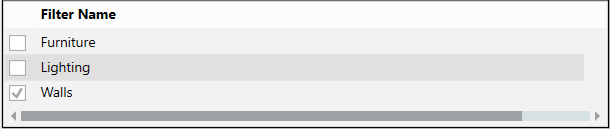
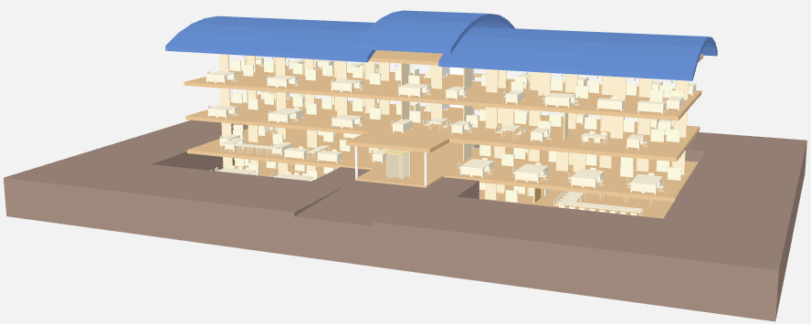
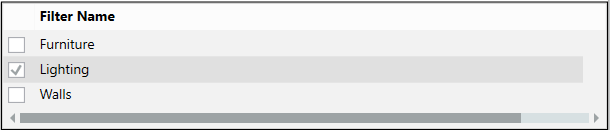
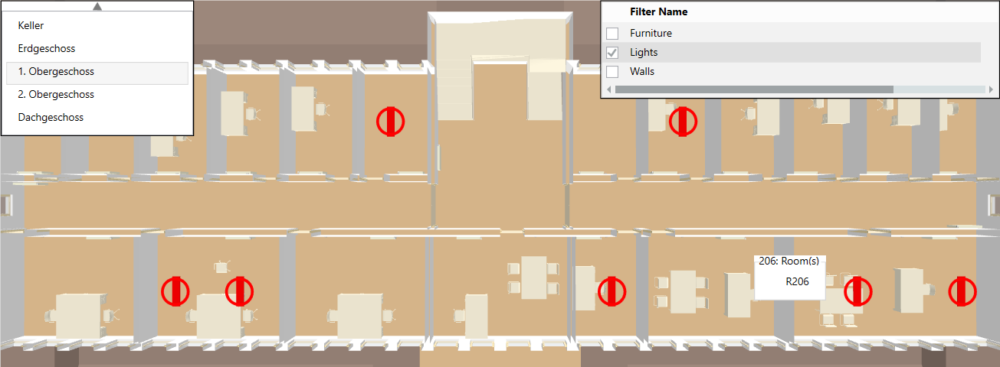
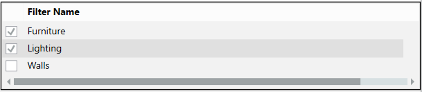
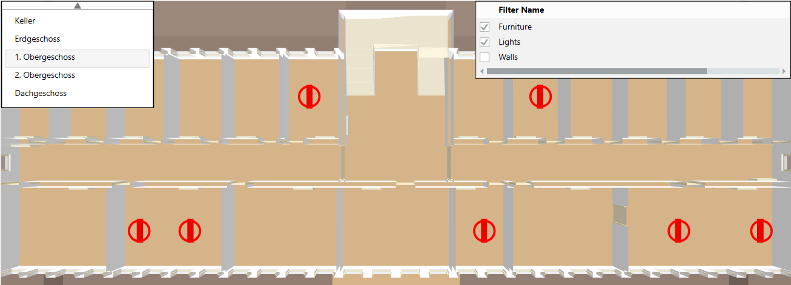

Filters hide or emphasize objects

The following workflows are examples of how a project could be and are not intended to reflect an actual project.
Prerequisites:
- System Manager is in Operation mode.
- In System Browser, Logical View is selected. BIM graphics can also be selected in the Application View as an alternative.
Show Wall Elements
Scenario: You do not want to display all building elements, for example, walls or floors. You can simplify the depiction of the building structure with predefined filters. The filters can be configured accordingly in engineering mode.
- Click Show/hide filter
 .
.
- Select one or more check boxes, for example, Walls to reduce the view.
- The building is displayed, for example, without walls.

Show Lighting Objects
Scenario: Entire groups of objects can be localized in a building with filters that emphasize the objects.
- Click Show/hide filter .
- Select Show/hide floor list window
 and then the desired floor.
and then the desired floor. - In the Filter Name dialog window, select the Lighting check box.

- The switched-on lighting objects are displayed.

- Select Show/hide floor list window and then another floor.
Emphasize Lighting Objects and Hide Furniture
Scenario: You want emphasize lighting objects on a floor that are switched on, while also hiding furniture.
- Click Show/hide filter .
- Select Show/hide floor list window and then the desired floor.
- In the Filter Name dialog window, select Lighting and Furniture.

- The switched-on lighting objects are displayed and the furniture is hidden.

Use Remove active filters  to clear all filters if the Filter name dialog box is already hidden, but selected filters are still enabled.
to clear all filters if the Filter name dialog box is already hidden, but selected filters are still enabled.